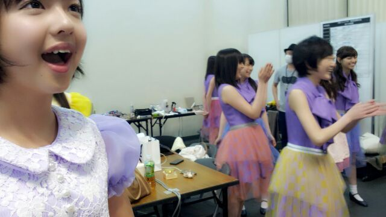

はい^^
こんにちわん♪
Rottyだよ !
〜13金ろってぃ〜(みくも付き)
まあやが最近15歳の
お誕生日をむかえました !
おめでとー(*^^*)
まあやが台詞覚えたいから
一緒に読み合わせしよっ?
って言ってきて
今日一緒に頑張りました (^∨^)
あの子は皆から
愛される子です/
とっても素直だから(*´∨`*)
。liveの前の発声中まーや 。

前回の『乃木坂ってどこ?』...
終盤で、プリンシパルの練習風景が
流れてたよねっ(〃∨〃)
ままままま、まさかっ!そんな ! !
まひろ映った...お...。
「あたしは冷たい麦茶が
飲みたいのよーっ 怒!!!!!!」
ひゃっはーーーん )))
びっくりしたーーっ(*^^*)
あれは見た通り
怒りろってぃ− だねん♪
あの役柄が好きで
台詞全部覚えちゃいましたっ(*^ω^*)
プリンシパルでやりたいな...
あの役 (〃ω〃)
あと、男役も てへ。
頑張ります ♪!
応援してくれたら
とってもとっても嬉しいキモチっ(><)
あっ、そーいや
『乃木ここ』続きが
楽しみだなあ((( ´∨`) !
よしっ!
ほいならねん(〃∨〃)
皆さんのこと 好きだよ。
おやすみなさい...(*´∨`*)